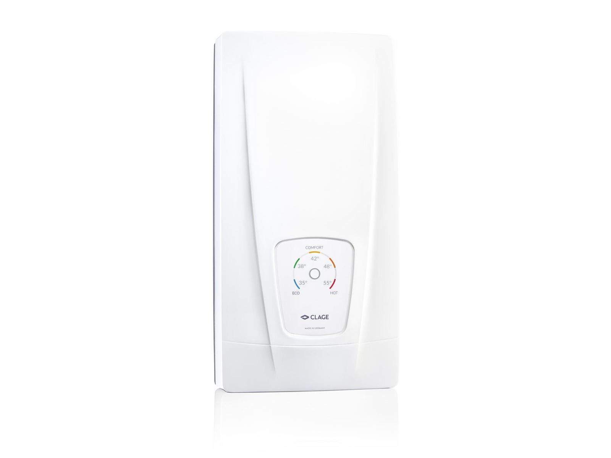
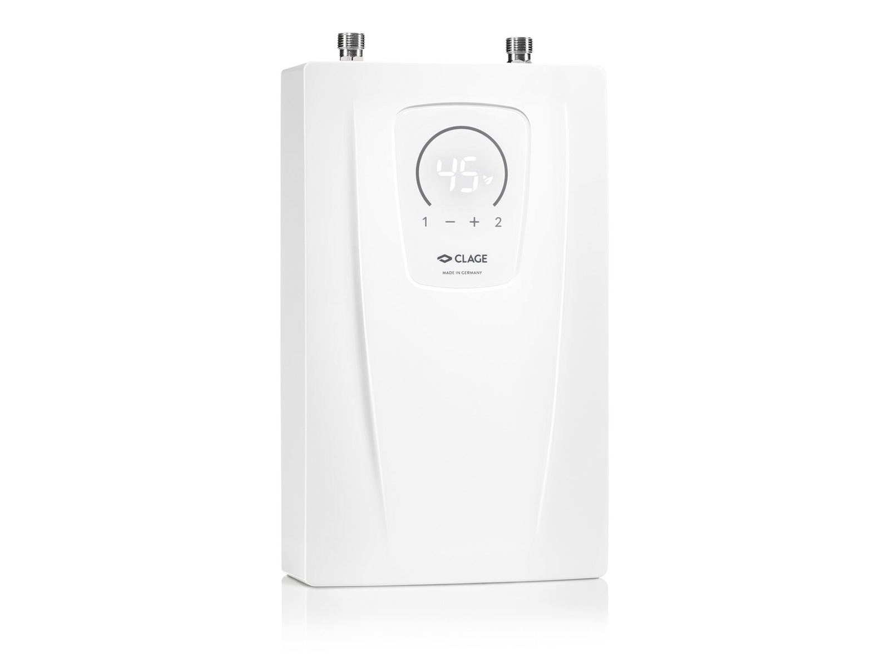
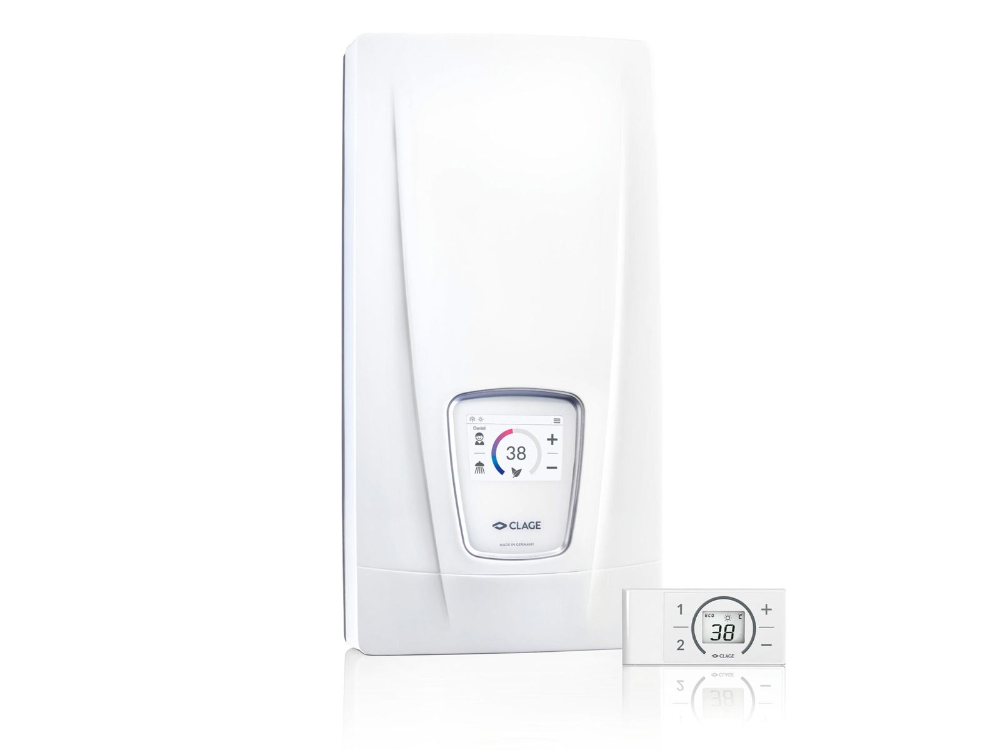
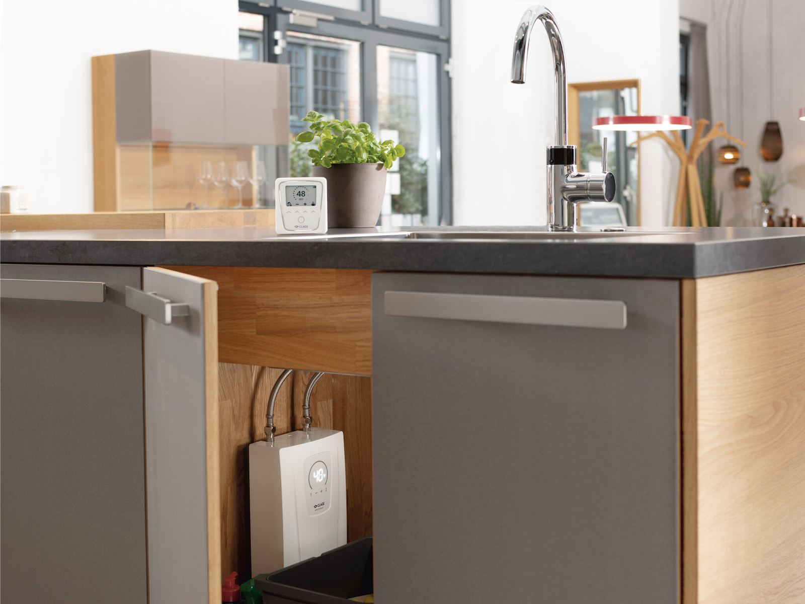

230 V

Kjøkken · 230 V
CEX9
Kompakt enhet for kjøkkenbenken eller servantskapet. 20–55 °C, med 0,5 °C trinn i komfortsonen.
6,5 kW20–55 °CLED-panel
6 353 kr
En gjennomstrømningsvarmer varmer vannet mens det renner – ikke før. Du slipper bereder som står og holder 200 liter varmt hele døgnet, og du får varmtvann så lenge dusjen varer. CLAGE har gjort dette i over 70 år.
Én stor bereder i kjelleren skal varme vann til hele bygget, og taper varme på veien. Vi setter en liten enhet der vannet faktisk tappes – på badet, på kjøkkenet, ved håndvasken.
Vannet kommer inn fra nettet med vanlig trykk. Ingen forvarming, ingen sirkulasjonspumpe, ingen tomgang.
Når du åpner kranen, registrerer enheten strømningen og varmer vannet direkte til valgt temperatur – innenfor 0,5 °C i komfortsonen.
Du får varmtvann så lenge du vil, uten å vente på at en tank skal fylles opp igjen.
Fra kompakte kjøkkenenheter på 230 V til 27 kW-maskiner for store bad. Alle med IES® varmesystem, elektronisk temperaturstyring og reservedeler på lager i Sandnes.

Kompakt enhet for kjøkkenbenken eller servantskapet. 20–55 °C, med 0,5 °C trinn i komfortsonen.
6 353 kr

Fem sensortaster for de vanligste temperaturene: 35, 38, 42, 48 og 55 °C. TTC® gir nøyaktig temperatur.
9 324 kr

18–27 kW, opptil 13,8 liter i minuttet. E-paper-skjerm i glass og Bluetooth-oppsett fra telefonen.
17 310 kr
«Desentralisert vannoppvarming gir en energieffektiv, hygienisk og plassbesparende løsning – og varmtvann der det faktisk trengs.»

En gjennomstrømningsvarmer har ingen tank. Den varmer vannet i det øyeblikket du åpner kranen, og slutter å bruke strøm når du stenger den. Det gjør at du aldri betaler for å holde et reservoar varmt – og at du aldri går tom for varmtvann.
Hos CLAGE styres temperaturen elektronisk. I komfortsonen mellom 35 og 43 °C kan den justeres i trinn på 0,5 °C, slik at dusjen blir den samme hver dag. Varmetrådsystemet IES® er laget for å tåle kalkrikt norsk vann, og er enkelt å skifte.
Alt utstyr som kobles til vann- og avløpsnettet skal monteres av rørlegger, og elektrisk arbeid av registrert installasjonsvirksomhet. Det står i forskriften, ikke bare i våre vilkår.
Service, garanti og reservedelerDimensjonering, trykkfall, sikring og kabel. Vi svarer på tekniske spørsmål på telefon 65 66 00, mandag til fredag 08–16.
Vi leverer dokumentasjon til FDV, SINTEF-godkjenning og energiberegning. Ta kontakt tidlig i prosjektet, så dimensjonerer vi sammen.
Send oss målene og litt om huset. Du får et forslag med enhet, effekt og temperaturvalg – uten bindende salg.